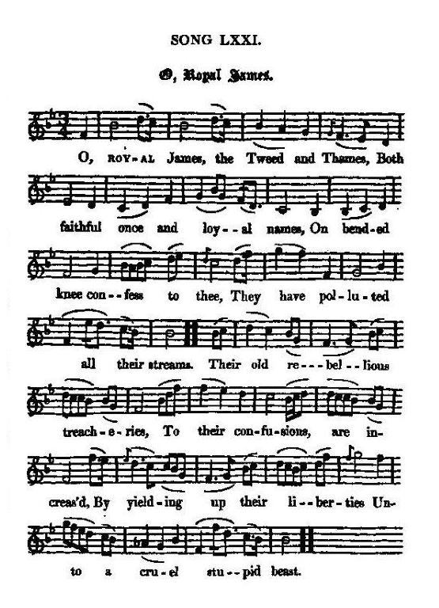

O Royal James
O Jacques notre roi
A Call to the Chevalier de Saint-George
Tune - Mélodie"Highland Lamentation" or "The Home of my Fathers"
from Hogg's "Jacobite Reliques" , vol. I N°71, 1819
Sequenced by Christian Souchon

|
To the tune
"I know nothing about the air, never having heard it till I got this copy sent me from a Jacobite lady. It is apparently Scottish." James Hogg in "Jacobite Relics". The tune, set to a song titled "Highland Lamentation" or "the Home of my Fathers" is found: in N.Stewart's "Collection of Scots Songs", p.25 , 1780, in W. Napier's "Selection", vol. II, p.72, 1792, and in Joseph Dale "Collection", vol. II, p.85, 1795. The non-Jacobite lyrics run thus: "Subdued by misfortune And bowed down with pain..". It is noticeable that the tune does not scan the Jacobite lyrics accurately. In particular it does not bring out the internal rhymes: "James" - "Thames", "knee" - "thee", etc... |
A propos de la mélodie
"Concernant la mélodie, je ne peux rien en dire, car je ne l'ai jamais entendue avant de recevoir cet exemplaire d'une dame Jacobite. Il apparaît que c'est un air écossais." James Hogg in "Jacobite Relics". Le timbre est intitulé "Highland Lamentation" ou "La patrie de mes pères". On le trouve: dans la "Collection of Scots Songs" de N.Stewart, p.25 , 1780, dans la "Selection" de W. Napier's , vol. II, p.72, 1792 et dans la "Collection" de Joseph Dale , vol. II, p.85, 1795. Les paroles non-Jacobites s'énoncent ainsi: "Vaincu par l'infortune Et courbé sous la peine..". On notera que la musique ne cadre pas bien avec le texte anglais. Elle ne fait pas ressortir les rimes internes telles que: "James" - "Thames", "knee" - "thee", etc... |

|
O ROYAL JAMES
1. O, Royal James, the Tweed and Thames, Both faithful once and loyal names, On bended knee confess to thee, They have polluted all their streams. Their old rebellious treacheries, To their confusions, are increased By yielding up their liberties Unto a cruel stupid beast. 2. This monster vile, in a short while, Of cash and blood will drain our isle; This gluts his spleen, that bribes the men Who serve their neighbours to beguile. In streams he sheds our noblest blood, And eagerly thirsts after more: The cannibal, in place of food, [1] Could sate himself with human gore. 3. No villain base can hell devise, But what this wretch would patronise; To serve their ends, he and his friends Would God to Mammon sacrifice. Thus, justly curs'd, infatuate we, Resisting thee, ourselves enslave; Whilst thou, and only thou, art he Who from dire ruin can us save. 4. O Deo date , our last retreat, Thy right assert, those rogues defeat; Though guilty, we belong to thee, And Clement is thy epithet. Destroy these vermin that infest And ravage thy own native land: Thrice happy shall we be, and blest, When we obey thy dear command. 5. Come, sacred James, by thy bright beams Dispel those hellish cozening streams, Which cheat us so as to forego True happiness for empty dreams. No peace, no comfort do we find, No mutual love, as heretofore. Haste the enchantment to unbind; These and thyself to us restore! Source: "The Jacobite Relics of Scotland, being the Songs, Airs and Legends of the Adherents to the House of Stuart" collected by James Hogg, published in Edinburgh by William Blackwood in 1819. |
JACQUES NOTRE ROI
1. Jacques, notre roi, la Tweed et la Tamise Jadis loyales, respectueuses des lois, Viennent t'implorer: leur cristal s'embourbe et s'enlise, Et c'est à genoux qu'elles s'inclinent devant toi. Depuis longtemps déjà, les agissements de traîtres rebelles N'ont cessé de susciter et de propager partout les querelles. Nous avons fait l'abandon volontaire de toutes nos franchises A ce tyran que l'on méprise, vil et cruel à la fois. 2. Ce Léviathan sut en quelques semaines Assécher l'île de son or, de son sang Dont il se repaît ou qu'il verse aux énergumènes Qui lui servent à pervertir les gens innocents. Et c'est à flots qu'il répand le sang issu des plus nobles lignages. Son inextinguible soif en réclame cependant d'avantage. Ce cannibale n'est pas de ceux que rassasie la chair humaine; [1] Non, il n'est rien qu'autant il aime, que le sang encore gluant! 3. L'enfer ne saurait rien inventer d'infâme Auquel il ne donnerait point sa caution. Pour servir ses fins, il livrerait, outre son âme, Dieu lui-même en sacrifice à l'autel de Mammon. Ainsi, justement punis d'avoir suivi notre engouement funeste, En te désobéissant, nous forgeâmes les liens qui nous molestent. Il n'est désormais que toi, et toi seul qui, du puits où nous tombâmes, Puisses nous tirer, et la flamme faire renaître du brandon. 4. O Deo date , notre recours ultime, Fais valoir tes droits et chasse les méchants! Coupables bien sûr, nous sommes aussi des victimes Montre qu'à bon droit tu portes le nom de "Clément". Détruis donc cette vermine à laquelle notre nation succombe Et ravage s'il le faut dans ton propre pays les lieux immondes Nous serions trois fois heureux, et ce serait une faveur insigne Si tu nous considérais dignes de t'avoir pour commandant. 5. Jacques, roi sacré, que tes rayons dissipent, Ce que vomit l'enfer, tous ces flots boueux, Qui nous firent échanger dans un marché de dupes L'authentique bonheur contre tous ces songes creux. La paix, ni le réconfort n'aborderont jamais à nos rivages Ni l'amour fraternel qui sous ces climats jadis était d'usage. Hâte-toi de nous délivrer des chaînes de ce charme maléfique Restaure ces bienfaits insignes! Reviens-nous! Sois généreux! (Trad. Christian Souchon(c)2009) |
|
"Though one of the best rhymed of the old songs, is nevertheless an overcharged and outrageous composition. It is in many MS. collections."
James Hogg in "Jacobite Relics". [1] Cannibal : This striking image that apparently was not created by Alexander McDonald, caused the latter's book of Gaelic poetry "Ais Eiridh na Sean-Chanoin Albannaich", where it applied to King George II, to be burnt by the hangman in Edinburgh. See "A Channibal Dhuidsich!" |
"Bien que ce soit l'un des chants anciens dont le style soit le plus soutenu, c'est aussi l'un de ceux dont la teneur est la plus outrée et la plus insultante. On le trouve dans de nombreux recueils de manuscrits."
James Hogg in "Jacobite Relics". [1] Cannibale : Cette image frappante dont on attribue à tort, comme on le voit, la paternité à Alexander McDonald, avait valu à ce dernier, qui l'appliquait à Georges II, de voir son recueil de poésie gaélique "Ais Eiridh na Sean-Chanoin Albannaich" brûlé par le bourreau à Edimbourg. Cf "A Channibal Dhuidsich!" |
|
|
|